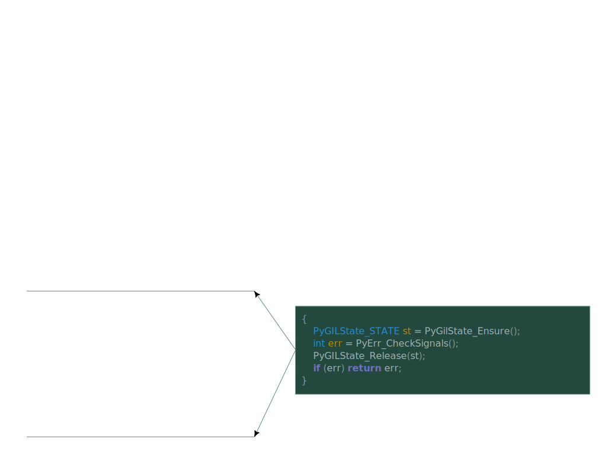
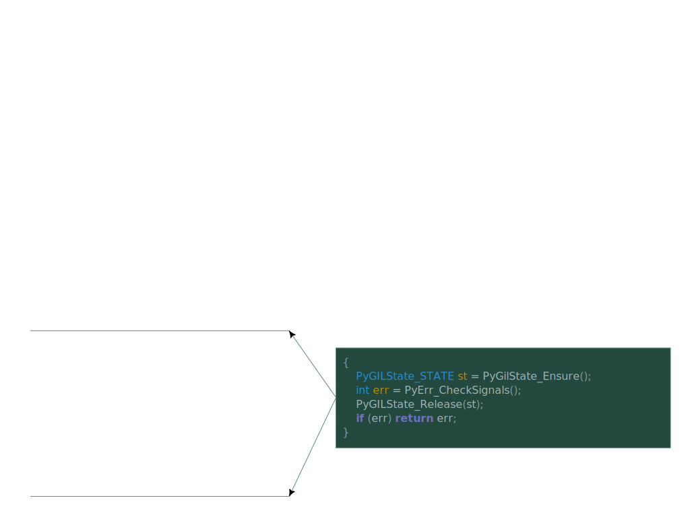
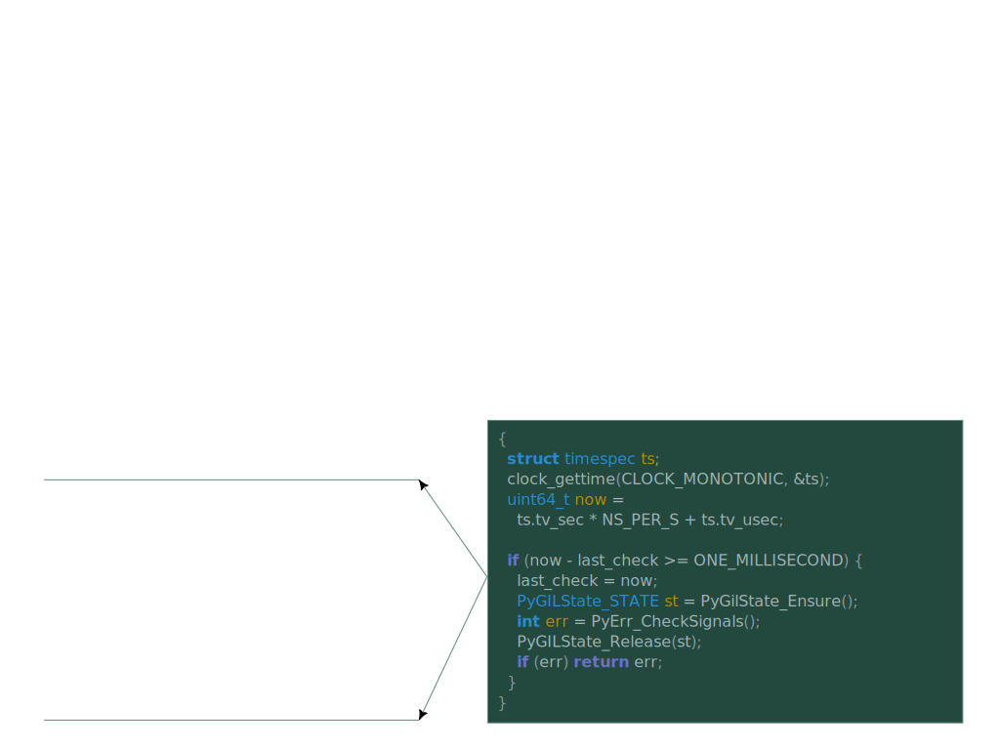
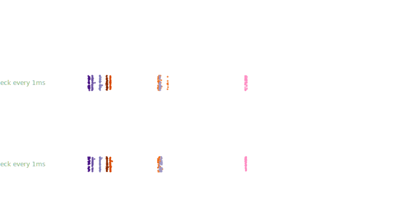
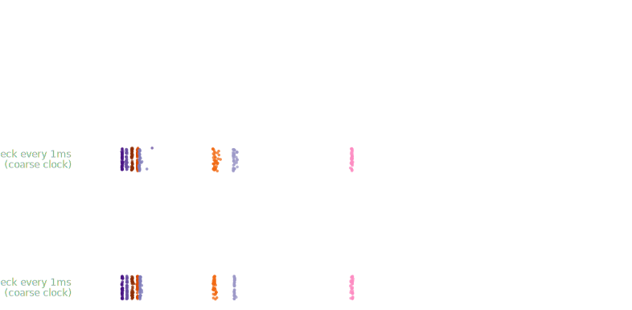

Writing Extension Modules
to be Interruptible
A Common Bug
>>> import random >>> def f(n=100000000): ... return [random.random() ... for _ in range(n)] ... >>> f()
>>> import random >>> def f(n=100000000): ... return [random.random() ... for _ in range(n)] ... >>> f() ^C
>>> import random >>> def f(n=100000000): ... return [random.random() ... for _ in range(n)] ... >>> f() ^CTraceback (most recent call last): File "<stdin>", line 1, in <module> File "<stdin>", line 2, in f KeyboardInterrupt >>>
< 0.1 s
>>> import numpy as np >>> rng = np.random.default_rng() >>> def g(n=1000000000): ... return rng.random(n) ... >>> g()
>>> import numpy as np >>> rng = np.random.default_rng() >>> def g(n=1000000000): ... return rng.random(n) ... >>> g() ^C
>>> import numpy as np >>> rng = np.random.default_rng() >>> def g(n=1000000000): ... return rng.random(n) ... >>> g() ^CTraceback (most recent call last): File "<stdin>", line 1, in <module> File "<stdin>", line 2, in g KeyboardInterrupt >>>
3.5 s
What went wrong
- NumPy didn’t call
PyErr_CheckSignals - Common bug in compiled-code extensions
- This talk is about:
- Why extensions need to do that
- Why, today, many extensions don’t do that
- How we can make it easier to do that
Audience background check
Raise your hand if…
- you’ve written code in a compiled language
- C or assembly, specifically
- you’ve written a compiled-code extension for CPython
- using the C-API directly, no helper libraries
- you’ve written a multithreaded program
- you’ve written a signal handler
- you know the difference between thread-safe and async-signal-safe
What Control-C Does1
- Starts out like any keystroke
- Converted to a signal,
SIGINT -
SIGINTdelivered to Python interpreter - Python interpreter reacts by raising
KeyboardInterrupt
1 Except on Windows
Signal Delivery
>>> import random >>> def f(n=100000000): ... return [random.random() ... for _ in range(n)] ... >>> f()
>>> import random
>>> def f(n=100000000):
... return [random.random()
... for _ in range(n)]
...
>>> f()
^C
Program received signal SIGINT
pymalloc_pool_extend ()
at Objects/obmalloc.c:1361
(gdb)
>>> import random
>>> def f(n=100000000):
... return [random.random()
... for _ in range(n)]
...
>>> f()
^C
Program received signal SIGINT
pymalloc_pool_extend ()
at Objects/obmalloc.c:1361
(gdb) signal SIGINT
Continuing with signal SIGINT.
Breakpoint 2, signal_handler (sig_num=2)
at ./Modules/signalmodule.c:347
(gdb)
>>> import numpy as np >>> rng = np.random.default_rng() >>> def g(n=1000000000): ... return rng.random(n) ... >>> f()
>>> import numpy as np
>>> rng = np.random.default_rng()
>>> def g(n=1000000000):
... return rng.random(n)
...
>>> f()
^C
Program received signal SIGINT
random_standard_uniform_fill ()
at 0x00007ffff00b23a7
(gdb)
>>> import numpy as np
>>> rng = np.random.default_rng()
>>> def g(n=1000000000):
... return rng.random(n)
...
>>> f()
^C
Program received signal SIGINT
random_standard_uniform_fill ()
at 0x00007ffff00b23a7
(gdb) signal SIGINT
Continuing with signal SIGINT.
Breakpoint 2, signal_handler (sig_num=2)
at ./Modules/signalmodule.c:347
(gdb)
Signal Delivery
Breakpoint 2, signal_handler (sig_num=2)
at ./Modules/signalmodule.c:347
(gdb) backtrace
#0 signal_handler (sig_num=2)
#1 <signal handler called>
#2 pymalloc_pool_extend (…)
#3 pymalloc_alloc (…)
#4 _PyObject_Malloc (…)
#5 _PyLong_FromMedium (…)
#6 PyLong_FromLong (…)
#7 _PyEval_EvalFrameDefault (…)
#8 PyEval_EvalCode (…)
(etc. etc.)
Breakpoint 2, signal_handler (sig_num=2)
at ./Modules/signalmodule.c:347
(gdb) backtrace
#0 signal_handler (sig_num=2)
#1 <signal handler called>
#2 random_standard_uniform_fill (…)
#3 __pyx_f_5numpy_6random_7_common_f… (…)
#4 __pyx_pw_5numpy_6random_10_genera… (…)
#5 method_vectorcall_FASTCALL_KEYWORDS (…)
#6 _PyObject_VectorcallTstate (…)
#7 PyObject_Vectorcall (…)
#8 _PyEval_EvalFrameDefault (…)
#9 PyEval_EvalCode (…)
How did we get here???
(gdb) backtrace #0 signal_handler (sig_num=2) #1 <signal handler called> #2 pymalloc_pool_extend (…) …
(gdb)
(gdb) up #1 <signal handler called> (gdb)
(gdb) up #1 <signal handler called> (gdb) disassemble Assembly dump of __restore_rt: => <+0>: mov $SYS_rt_sigreturn,%rax <+7>: syscall (gdb)
(gdb) up #1 <signal handler called> (gdb) disassemble Assembly dump of __restore_rt: => <+0>: mov $SYS_rt_sigreturn,%rax <+7>: syscall (gdb) up #2 pymalloc_pool_extend (…) (gdb) disassemble Assembly dump of pymalloc_pool_extend: ... <+473>: mov %ecx,0x28(%rdx) => <+476>: movq $0x0,(%rdi) ...
The black magic of signal delivery
- Kernel “preempted” execution of
pymalloc_pool_extend -
Forged stack frames to make CPU behave as if
pymalloc_pool_extendcalled__restore_rtwhich calledsignal_handler - Resumed execution at beginning of
signal_handler
(gdb) up #1 <signal handler called> (gdb) disassemble Assembly dump of __restore_rt: => <+0>: mov $SYS_rt_sigreturn,%rax <+7>: syscall (gdb) up #2 pymalloc_pool_extend (…) (gdb) disassemble Assembly dump of pymalloc_pool_extend: ... <+473>: mov %ecx,0x28(%rdx) => <+476>: movq $0x0,(%rdi) ...
What Control-C Does1
- Starts out like any keystroke
- Converted to a signal,
SIGINT -
SIGINTdelivered to Python interpreter - Python interpreter reacts by
raising
KeyboardInterrupt
- C signal handler only sets a flag
- Nothing more happens until control returns to the main interpreter loop
- Main loop checks the flag in some (not all!) bytecode ops
- If the flag is set, raises
KeyboardInterrupt
1 Except on Windows
What NumPy isn’t doing
def f(out, rng):
for i in range(len(out)):
out[i] = rng.random()
[42] FOR_ITER to [96]
STORE_FAST 1 (i)
LOAD_FAST 2 (rng)
LOAD_ATTR 5 (NULL|self + random)
CALL 0
LOAD_FAST 0 (out)
LOAD_FAST 1 (i)
STORE_SUBSCR
JUMP_BACKWARD to [42]
[96] END_FOR
void random_standard_uniform_fill(
bitgen_t *bitgen,
npy_intp cnt, double *out)
{
npy_intp i;
for (i = 0; i < cnt; i++) {
out[i] = next_double(bitgen);
}
}
int random_standard_uniform_fill(
bitgen_t *bitgen,
npy_intp cnt, double *out)
{
npy_intp i;
for (i = 0; i < cnt; i++) {
out[i] = next_double(bitgen);
if (PyErr_CheckSignals())
return -1;
}
return 0;
}
.L3:
mov rdi, r12
call next_double
movsd qword ptr [r13 + rbx*8], xmm0
add rbx, 1
cmp rbp, rbx
jne .L3
Why isn’t it doing that?
- Abstractly simple
- Call
PyErr_CheckSignalsperiodically - If it returns −1, treat as failure; abandon work, return
- Call
int PyErr_CheckSignals()Part of the Stable ABI.
This function interacts with Python’s signal handling.
If the function is called from the main thread and under the main Python interpreter, it checks whether a signal has been sent to the processes and if so, invokes the corresponding signal handler. If the signal module is supported, this can invoke a signal handler written in Python.
The function attempts to handle all pending signals, and then returns 0. However, if a Python signal handler raises an exception, the error indicator is set and the function returns −1 immediately (such that other pending signals may not have been handled yet: they will be on the next
PyErr_CheckSignals()invocation).If the function is called from a non-main thread, or under a non-main Python interpreter, it does nothing and returns 0.
This function can be called by long-running C code that wants to be interruptible by user requests (such as by pressing Ctrl-C).
Note: The default Python signal handler for
SIGINTraises theKeyboardInterruptexception.
Why isn’t it doing that?
- Abstractly simple
- Call
PyErr_CheckSignalsperiodically - If it returns −1, treat as failure; abandon work, return
- Call
- Not obvious from docs that you need to do that
Why isn’t it doing that?
void random_standard_uniform_fill(
bitgen_t *bitgen,
npy_intp cnt, double *out)
{
npy_intp i;
for (i = 0; i < cnt; i++) {
out[i] = next_double(bitgen);
}
}
int random_standard_uniform_fill(
bitgen_t *bitgen,
npy_intp cnt, double *out)
{
npy_intp i;
for (i = 0; i < cnt; i++) {
out[i] = next_double(bitgen);
if (PyErr_CheckSignals())
return -1;
}
return 0;
}
Why isn’t it doing that?
- Abstractly simple
- Call
PyErr_CheckSignalsperiodically - If it returns −1, treat as failure; abandon work, return
- Call
- Not obvious from docs that you need to do that
- Have to decide where and how often to do that
- Must propagate the −1 return all the way up your call chain
int PyErr_CheckSignals()Part of the Stable ABI.
This function interacts with Python’s signal handling.
If the function is called from the main thread and under the main Python interpreter, it checks whether a signal has been sent to the processes and if so, invokes the corresponding signal handler. If the signal module is supported, this can invoke a signal handler written in Python.
The function attempts to handle all pending signals, and then returns 0. However, if a Python signal handler raises an exception, the error indicator is set and the function returns −1 immediately (such that other pending signals may not have been handled yet: they will be on the next
PyErr_CheckSignals()invocation).If the function is called from a non-main thread, or under a non-main Python interpreter, it does nothing and returns 0.
This function can be called by long-running C code that wants to be interruptible by user requests (such as by pressing Ctrl-C).
Note: The default Python signal handler for
SIGINTraises theKeyboardInterruptexception.
Why isn’t it doing that?
- Abstractly simple
- Call
PyErr_CheckSignalsperiodically - If it returns −1, treat as failure; abandon work, return
- Call
- Not obvious from docs that you need to do that
- Have to decide where and how often to do that
- Must propagate the −1 return all the way up your call chain
-
PyErr_CheckSignalscan run arbitrary Python code- Needs to be safe to run arbitrary Python
- May need to reclaim the GIL (expensive)
Why isn’t it doing that?
void random_standard_uniform_fill(
bitgen_t *bitgen,
npy_intp cnt, double *out)
{
npy_intp i;
for (i = 0; i < cnt; i++) {
out[i] = next_double(bitgen);
}
}
int random_standard_uniform_fill(
bitgen_t *bitgen,
npy_intp cnt, double *out)
{
PyGILState_STATE st;
int err;
npy_intp i;
for (i = 0; i < cnt; i++) {
out[i] = next_double(bitgen);
st = PyGILState_Ensure();
err = PyErr_CheckSignals();
PyGILState_Release();
if (err) return err;
}
return 0;
}
A more complicated example
 

Cost of checking for signals
Cost of checking for signals

What if we didn’t check every time?

What if we didn’t check every time?
Claw back more speed with coarse clock


Longer intervals don’t help
Recap
- CPython interpreter cannot raise
KeyboardInterruptdirectly from its C-level signal handler- Must return to main interpreter loop before raising exceptions
- Prompt return needs cooperation from compiled-code extensions
- Many extensions do not cooperate
- Need to do this has not been well advertised
- Retrofit requires finicky code changes
- Substantial runtime costs
Short term recommendation
#ifndef CLOCK_MONOTONIC_COARSE
#define CLOCK_MONOTONIC_COARSE CLOCK_MONOTONIC
#endif
#define ONE_MS_IN_NS 1000000
#define ONE_S_IN_NS 1000000000
int CheckSignalsOftenEnough()
{
static struct timespec last_check = { 0, 0 };
struct timespec now;
clock_gettime(CLOCK_MONOTONIC_COARSE, &now);
if ( now.tv_sec < last_check.tv_sec // monotonic clock went backward?!
|| now.tv_sec > last_check.tv_sec + 1 // more than 1s since last check
|| (now.tv_sec == last_check.tv_sec // same second, more than 1ms
&& now.tv_nsec > last_check.tv_nsec + ONE_MS_IN_NS)
|| now.tv_nsec + ONE_S_IN_NS // different second, ditto
> last_check.tv_nsec + ONE_MS_IN_NS
) {
last_check = now;
PyGILState_STATE s = PyGilState_Ensure();
int err = PyErr_CheckSignals();
PyGILState_Release(s);
return err;
}
return 0;
}
How can we make this better?
- Improve core documentation
- Highlight need to call
PyErr_CheckSignalsregularly - Explain how to do so safely
- Explain how to do so efficiently
- Highlight need to call
How can we make this better?
- Don’t require GIL to call
PyErr_CheckSignals- Cost of frequent checks is mostly cost of locking
- Signal flag is already an atomic variable! Don’t need GIL to test it
- Have
PyErr_CheckSignalsclaim GIL itself, only if flag is set - (Still needs to be safe to take GIL at any callsite)
- Proposed for Python 3.14: [TODO: pull request URL]
How can we make this better?
- Make Cython, Numba, and similar tools insert checks for you
cdef random_standard_uniform_fill(
bitgen gen,
double [:] out,
) nogil:
for i in range(len(out)):
out[i] = next_double(gen)
int random_standard_uniform_fill(
bitgen gen,
__Pyx_memviewslice out
) {
Py_ssize_t i;
Py_ssize_t len;
len = __Pyx_MemoryView_Len(out);
for (i = 0; i < len; i += 1) {
*((double *)
((out.data +
i * out.strides[0]))) =
next_double(gen);
if (CheckSignalsOftenEnough())
return -1;
}
return 0;
}
How can we make this better?
- In tools like PyO3, model control-C as async cancellation
#[pyfunction]
async fn random_standard_uniform_fill(
#[pyo3(cancel_handle)] mut cancel: CancelHandle,
gen: BitGen,
out: &mut f64[],
) {
futures::select! {
cancel.cancelled.fuse() => {},
_ => {
for i in 0..out.len() {
out[i] = gen.next_double();
}
}
}
}
How can we make this better?
- Turn Python into a shell-structured language
>>> import numpy as np >>> rng = np.random.default_rng() >>> def g(n=1000000000): ... return rng.random(n) ... >>> g()
- Evaluate
g()in a subprocess - (This is why the Unix shell doesn’t have the same problem)
- Pass the result back via shared memory or something
How can we make this better?
- Brainstorming time!
- Call out your ideas
- Or ask a question
- One sentence per person
Colophon
All the code shown in this presentation, the raw data, and the analysis scripts may be found
athttps://github.com/MillionConcepts/cpython-ext-ctrl-c
orhttps://git.sr.ht/~zackw/cpython-ext-ctrl-c
and may be reused under Million Concepts’ usual 3-clause BSD license- Fonts used in this presentation: Libertinus Sans and B612 Mono
- Data visualization thanks to ggplot2 and cowplot
- Graphics postprocessed to various degrees in Inkscape
- Slide deck rendered with reveal.js